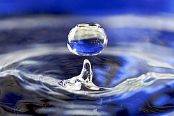

1. Introdução

A água é um dos recursos naturais mais importantes e indispensáveis à vida na Terra...
2. A Importância da Água para os Seres Vivos
A água é fundamental para todos os seres vivos, desde os humanos até as plantas e animais...
3. O Ciclo da Água
O ciclo da água é um processo natural e contínuo que permite a renovação constante da água disponível no planeta...
4. Poluição da Água

A poluição da água é um dos maiores desafios ambientais enfrentados pela humanidade...
5. Água Potável e Não Potável
A água potável é tratada e segura para consumo, enquanto a água não potável pode conter contaminantes perigosos...
6. Conclusão
A água é essencial para a vida, e sem ela, a sobrevivência no planeta não seria possível...